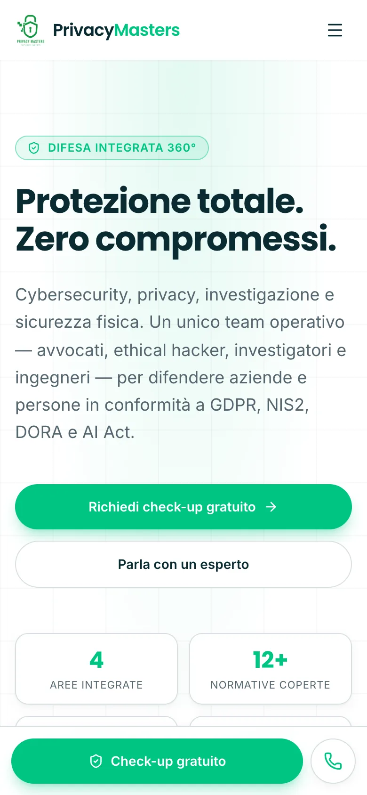
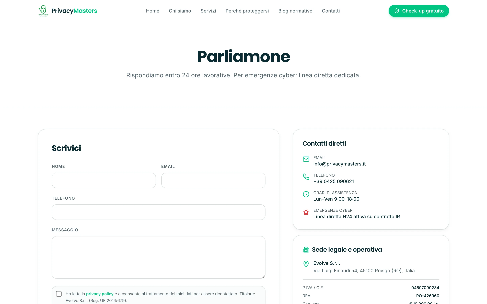
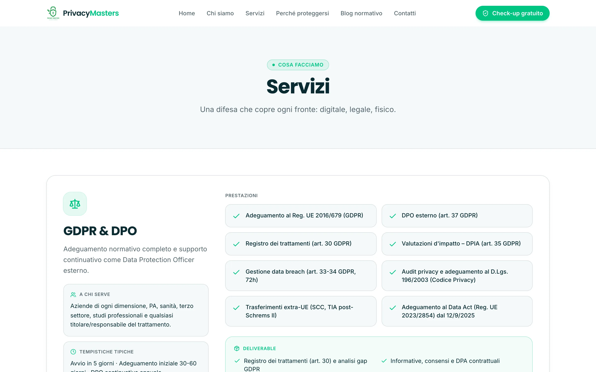
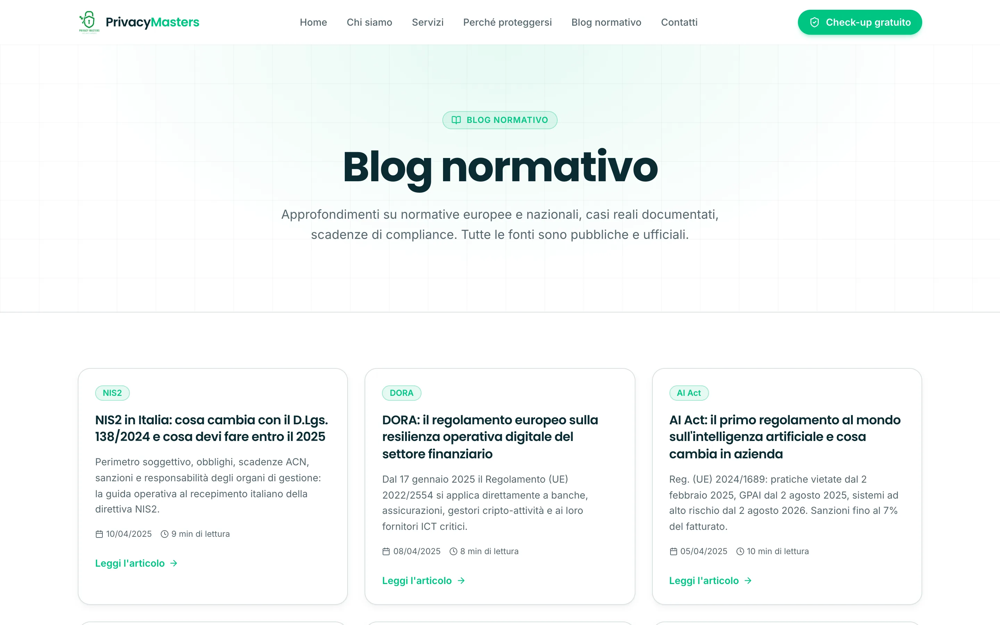
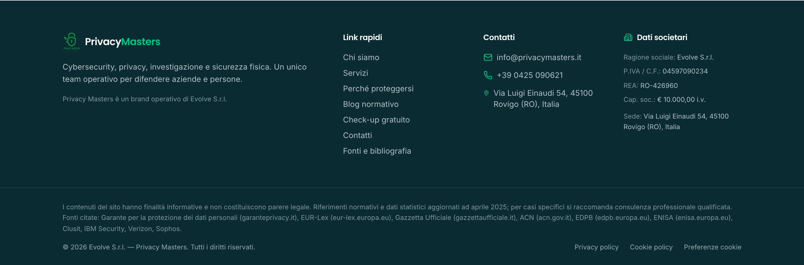

Screenshot
Homepage su desktop (1440px) e su mobile (390px), poi le pagine interne analizzate. Clicca un'immagine per vedere la pagina intera.



Pagine interne






Header e footer

Design system attuale · privacymasters.it
Sistema chiaro e coerente: verde brillante più petrolio scuro, titoli Poppins molto grandi e pulsanti a pillola. Il limite principale è l'accessibilità del verde e un logo che non regge le dimensioni piccole.
Gli elementi base del sito in un colpo d'occhio: i colori con il loro ruolo (come sono definiti nel codice), i caratteri, i pulsanti e le forme ricorrenti.
14pxCosa tenere e cosa correggere nel restyling. I problemi sono ordinati per gravità; ognuno riporta da dove viene l'evidenza.
Il testo bianco su verde #00C483 ha contrasto 2.28:1. La norma WCAG AA chiede almeno 4.5:1. Riguarda tutte le CTA principali e i numeri verdi su bianco.
Il logo è un PNG 531×595 mostrato a 32×36px: la scritta "SECURITY EXPERTS" incorporata diventa illeggibile. Il suo verde (~#109040) è diverso dal verde del sito (#00C483).
Badge in maiuscolo 12px e statistiche usano lo stesso verde #00C483 su bianco o su verde chiarissimo: stesso problema di contrasto delle CTA.
Homepage su desktop (1440px) e su mobile (390px), poi le pagine interne analizzate. Clicca un'immagine per vedere la pagina intera.





Quanto è usato davvero ogni colore. La barra mostra le proporzioni: gli sfondi sono pesati per superficie occupata, i testi per numero di caratteri. I quadretti indicano i colori semitrasparenti.
#FFFFFF51.4% della superficie#F5F9FA29.5% della superficie#0A2B3310.9% della superficie#00C4894.3% della superficie · trasp. 0.05#FFFFFF2.1% della superficie · trasp. 0.7#00C4830.8% della superficie#00C4800.6% della superficie · trasp. 0.1#FFFFFF0.3% della superficie · trasp. 0.8#F5F9F90.2% della superficie · trasp. 0.5#0A2B3336.5% del testo#55666F32.7% del testo#FFFFFF11.2% del testo · trasp. 0.5#FFFFFF7.6% del testo · trasp. 0.7#00C4836.4% del testo#FFFFFF2.2% del testo · trasp. 0.6#FFFFFF2.1% del testo#55666F0.9% del testo · trasp. 0.8#FFFFFF0.4% del testo · trasp. 0.8#D8DFE383.8% dei bordi#00C38115.0% dei bordi · trasp. 0.3#00C3820.6% dei bordi · trasp. 0.4#FFFFFF0.6% dei bordi · trasp. 0.1Il contrasto misura quanto un testo si stacca dallo sfondo. La soglia minima per il testo normale è 4.5:1; per i testi grandi basta 3:1.
| Elemento | Sfondo | Contrasto | Esito |
|---|---|---|---|
| Testo #0A2B33 | #FFFFFF | 14.93:1 | Leggibile (AA) |
| Testo #55666F | #FFFFFF | 5.97:1 | Leggibile (AA) |
| Testo #00C483 | #FFFFFF | 2.28:1 | Insufficiente |
| Pulsante «Check-up gratuito» | #00C483 | 2.28:1 | Insufficiente |
| Pulsante «Richiedi check-up gratuito» | #00C483 | 2.28:1 | Insufficiente |
| Pulsante «Parla con un esperto» | #FFFFFF | 14.93:1 | Leggibile (AA) |
| Pulsante «Scopri il tuo livello di r» | #00C483 | 2.28:1 | Insufficiente |
| Pulsante «Prenota il tuo check-up gr» | #00C483 | 2.28:1 | Insufficiente |
| Pulsante «Accetta e mostra la mappa» | #00C483 | 2.28:1 | Insufficiente |
I titoli e il testo come appaiono sul sito, con dimensione, interlinea, peso e colore. Sotto, tutte le dimensioni di carattere usate, dalla più grande alla più piccola.
Pulsanti, badge, card e campi dei form ricostruiti con gli stili reali, ognuno sul suo sfondo (dove lo sfondo è un'immagine o un gradiente scuro, viene simulato).
Forma, sfondo, bordo e ombra reali; il contenuto è schematizzato.
Raggi degli angoli e ombre più usati. Un raggio di 9999px significa forma a pillola.
14px9999px18px22pxPer chi sviluppa: valori grezzi estratti dal browser. Il file completo è tokens.json.
| Elemento | Valore |
|---|---|
| Larghezza massima contenuti | 768px (10), 1280px (8), 896px (2), 1024px (1), 1152px (1) |
| Spazio verticale delle sezioni | 112px / 112px (8), 80px / 80px (2), 0px / 0px (1) |
| Spaziature tra elementi (gap) | 8px (25), 12px (23), 16px (16), 6px (4), 20px (3), 28px (1), 24px (1), 40px (1) |
| Header | {"bg": "#FFFFFFB2", "h": 64, "position": "sticky", "backdrop": "blur(12px)", "borderBottom": "0px #D8DFE3"} |
| Footer | {"bg": "#0A2B33", "color": "#FFFFFF", "h": 476} |
| Icone Lucide usate | award, arrow-right, circle-question-mark, circle-check, shield-check, scale, building2, building-2, bug, fingerprint-pattern, eye-off, scan-search, clipboard-list, activity, lock, search, camera, landmark, heart-pulse, factory, zap, shopping-bag, briefcase, hand-heart |
| Transizioni e animazioni | 0.15s cubic-bezier(0.4, 0, 0.2, 1) (33), 0.3s cubic-bezier(0.4, 0, 0.2, 1) (1) |
| tag | font | size | peso | interlinea | colore | caratteri | esempio |
|---|---|---|---|---|---|---|---|
| p | Inter | 14px | 400 | 22.75px | #55666F | 2518 | Crescita attacchi gravi in Italia (2019→2024) |
| p | Inter | 18px | 400 | 29.25px | #55666F | 609 | Dati ufficiali aggregati da Clusit, ACN, Garan |
| span | Inter | 14px | 500 | 20px | #0A2B33 | 543 | ISO/IEC 27001:2022 — Sistemi di gestione della |
| p | Inter | 12px | 400 | 19.5px | #FFFFFF80 | 477 | I contenuti del sito hanno finalità informativ |
| h2 | Poppins | 48px | 700 | 48px | #0A2B33 | 223 | I numeri della cybersicurezza in Italia |
| p | Inter | 20px | 400 | 32.5px | #55666F | 213 | Cybersecurity, privacy, investigazione e sicur |
| span | Poppins | 18px | 600 | 28px | #0A2B33 | 198 | La mia azienda è obbligata ad applicare la NIS |
| p | Inter | 11px | 500 | 16.5px | #55666FCC | 187 | Clusit – Rapporto 2025 |
| p | Inter | 16px | 400 | 26px | #55666F | 172 | Le competenze del team derivano da esperienze |
| h3 | Poppins | 18px | 600 | 28px | #0A2B33 | 146 | Ransomware |
| h3 | Poppins | 16px | 600 | 24px | #0A2B33 | 146 | Pubblica Amministrazione |
| a | Inter | 14px | 400 | 20px | #FFFFFFB2 | 130 | Chi siamo |
| p | Inter | 14px | 400 | 22.75px | #FFFFFFB2 | 115 | Cybersecurity, privacy, investigazione e sicur |
| p | Poppins | 24px | 600 | 32px | #0A2B33 | 108 | “Il problema non è se succederà. Ma quando.” |
| li | Inter | 12px | 400 | 19.5px | #FFFFFFB2 | 101 | Ragione sociale: Evolve S.r.l. |
| span | Inter | 12px | 600 | 16px | #00C483 | 87 | Difesa integrata 360° |
| a | Inter | 14px | 600 | 20px | #FFFFFF | 75 | Check-up gratuito |
| p | Inter | 18px | 400 | 28px | #FFFFFFCC | 73 | Un check-up gratuito può evitarti danni da cen |
| p | Inter | 12px | 400 | 16px | #FFFFFF99 | 68 | © 2026 Evolve S.r.l. — Privacy Masters. Tutti |
| dd | Inter | 11px | 400 | 16.5px | #55666F | 65 | Aree integrate |
| a | Inter | 14px | 500 | 20px | #55666F | 60 | Home |
| h3 | Poppins | 20px | 600 | 28px | #0A2B33 | 59 | Analisi del rischio |
| p | Inter | 12px | 400 | 16px | #FFFFFF80 | 53 | Privacy Masters è un brand operativo di Evolve |
| span | Inter | 14px | 600 | 20px | #00C483 | 52 | Scopri di più |
| token | selettore | valore |
|---|---|---|
--font-sans | :root, :host | "Inter", system-ui, -apple-system, sans-serif |
--color-background | :root, :host | var(--background) |
--color-foreground | :root, :host | var(--foreground) |
--color-border | :root, :host | var(--border) |
--color-ring | :root, :host | var(--ring) |
--font-display | :root, :host | "Poppins", "Inter", system-ui, sans-serif |
--radius | :root | .625rem |
--background | :root | #FFFFFF |
--foreground | :root | #0A2B33 |
--surface | :root | #F5F9FA |
--surface-foreground | :root | #0A2B33 |
--card | :root | #FFFFFF |
--card-foreground | :root | #0A2B33 |
--popover | :root | #FFFFFF |
--popover-foreground | :root | #0A2B33 |
--primary | :root | #00C483 |
--primary-foreground | :root | #FFFFFF |
--primary-hover | :root | #008B5B |
--secondary | :root | #EAF4F4 |
--secondary-foreground | :root | #0A2B33 |
--muted | :root | #F1F6F6 |
--muted-foreground | :root | #55666F |
--accent | :root | #E1F9EC |
--accent-foreground | :root | #0A2B33 |
--destructive | :root | #DE3B3D |
--destructive-foreground | :root | #FFFFFF |
--border | :root | #D8DFE3 |
--input | :root | #D8DFE3 |
--ring | :root | #00C483 |
--ink | :root | #0A2B33 |
--ink-foreground | :root | #FFFFFF |